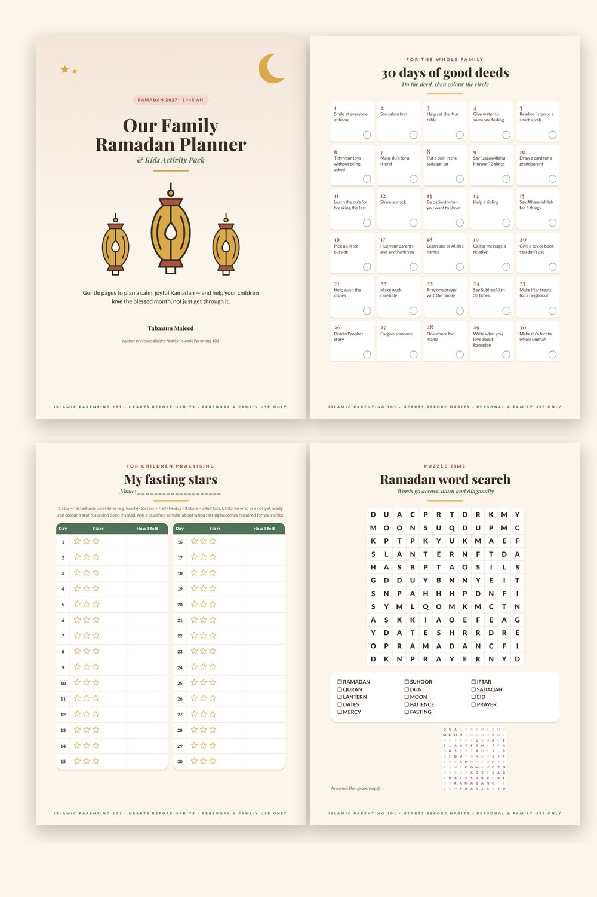

RAMADAN 2027 · PRINTABLE PACK
Our Family Ramadan Planner & Kids Activity Pack
19 gentle, printable pages to plan a calm Ramadan — and help your children love the blessed month, not just get through it.

Launching soon — join the list to hear first
What's inside
- Family intentions & pre-Ramadan checklist — Start calm, two weeks before the first suhoor.
- Family routine & suhoor/iftar planner — A simple rhythm for your days, with little-helper jobs for kids.
- 30 Days of Good Deeds — One small deed a day for the whole family to colour in.
- My Fasting Stars & Ramadan Salah tracker — Gentle, by-age practice for children — no shaming.
- Family Quran tracker & sadaqah jar — Colour a juz, colour a coin, decide together where it goes on Eid.
- 3 Ramadan du'as with Arabic, transliteration & sources — Including the du'a for breaking the fast and for Laylat al-Qadr.
- Last ten nights planner — A small, special plan for each night.
- Kids pages — Word search with answers, colouring page, My Ramadan journal and a Ramadan Star award.

Good to know
- Instant PDF download in A4 and US Letter. Print at home as many times as you need for your family.
- Made for ages 3–12 and their mamas. Ramadan and Eid dates are left blank for your local moon sighting.
- Quran and hadith are quoted with their sources. For fiqh questions (like when a child must fast), please ask a qualified scholar.
- Personal, family and single-classroom use. Please don't share the file.
- Something wrong with your files? See our Refund Policy; we'll fix it or refund you.
Launching soon — join the list to hear first
Planning ahead? Read Ramadan with Kids: The Complete Guide and How to Teach Kids to Fast.